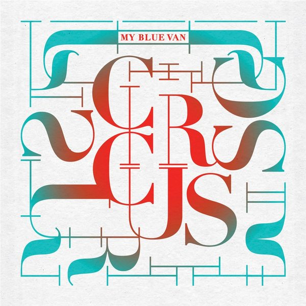

Circus

2024
Circus EP
Music for a show about falling. We wrote it for MAT, a circus performance by TENT in which seven acrobats tumble, crash onto mats, miss and get back up again, with our songs carrying them along.
See the show →